トップ
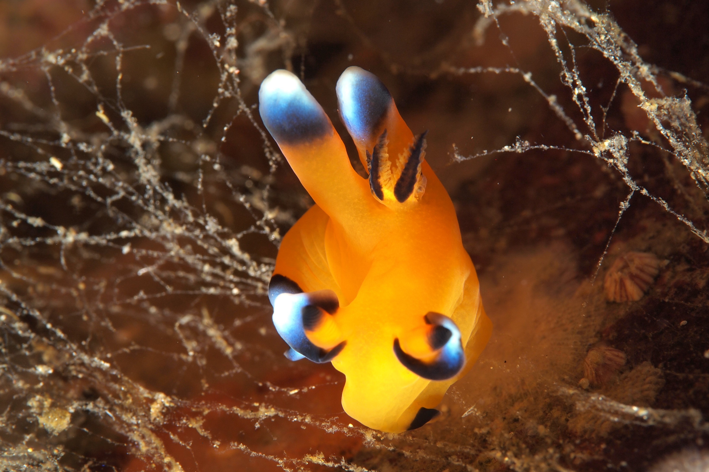
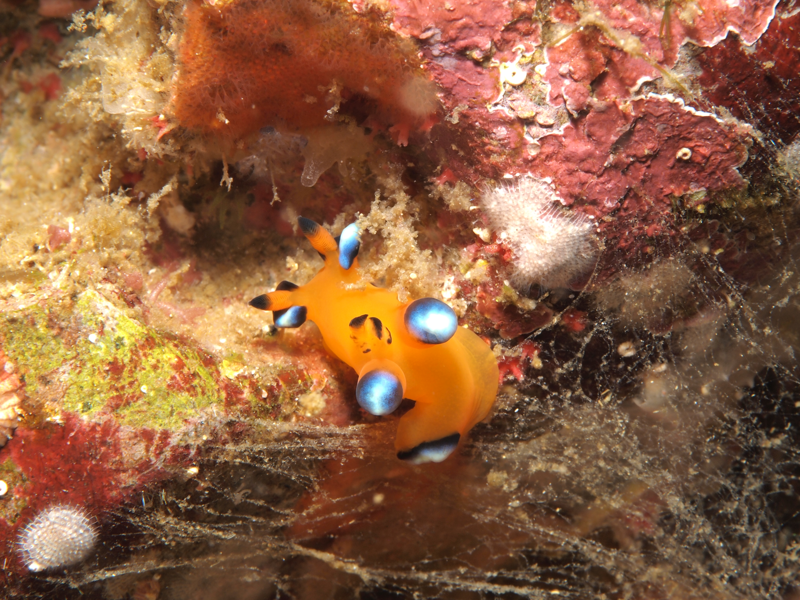
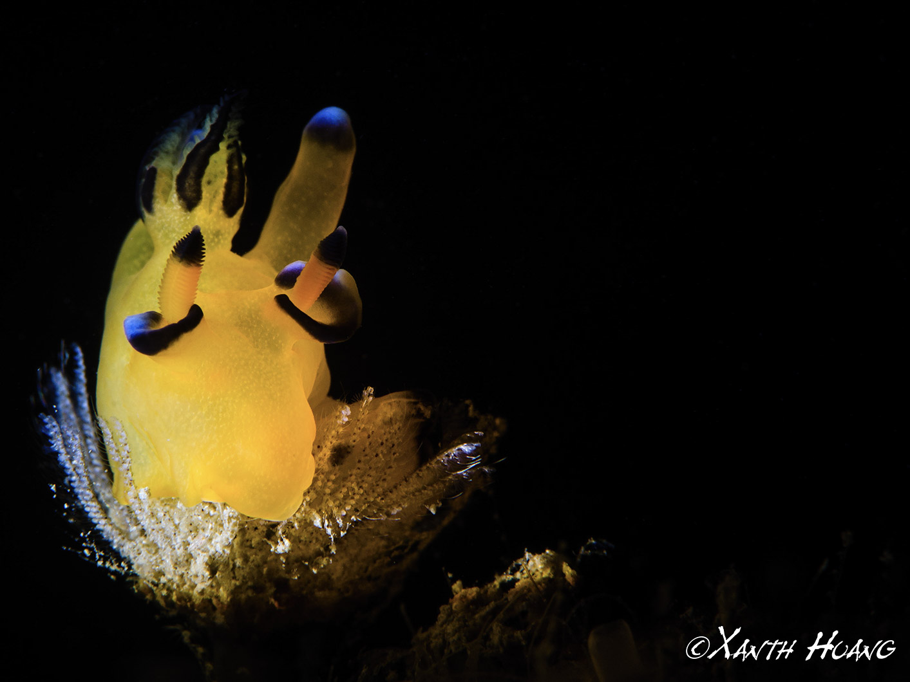
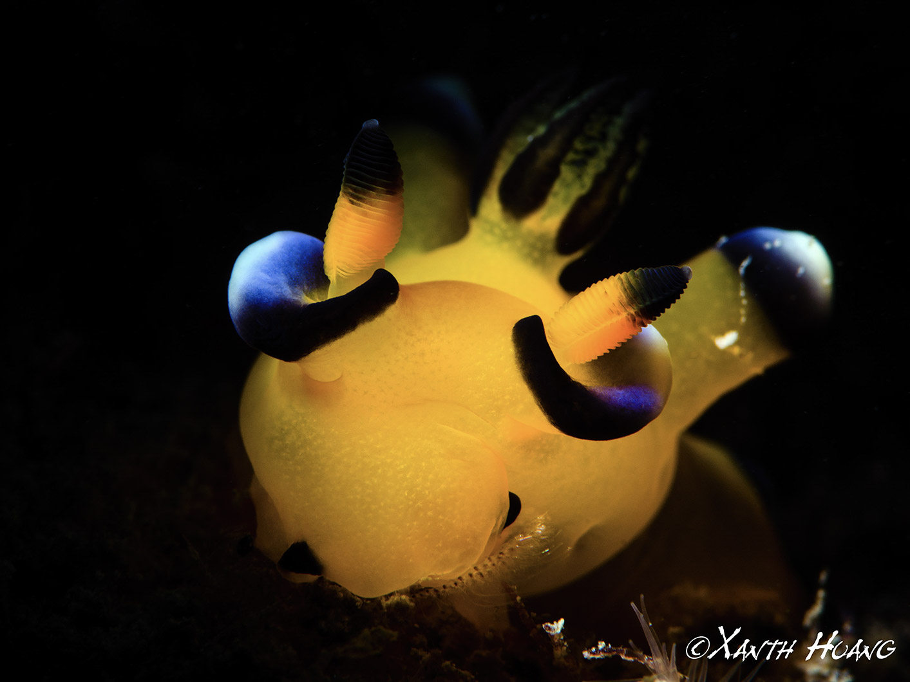
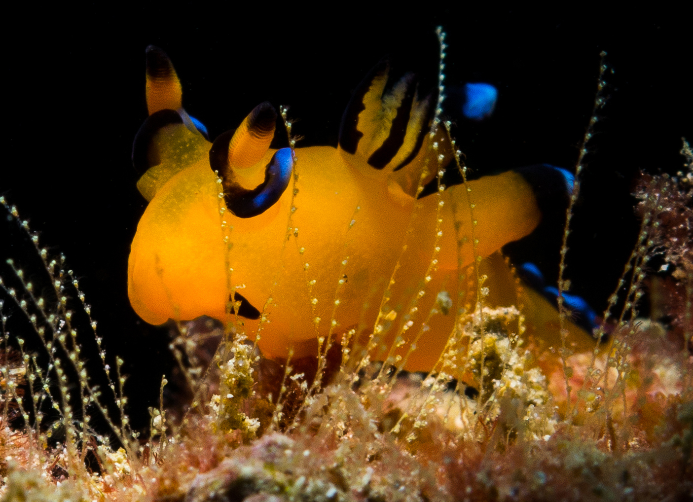
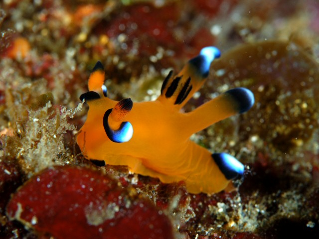
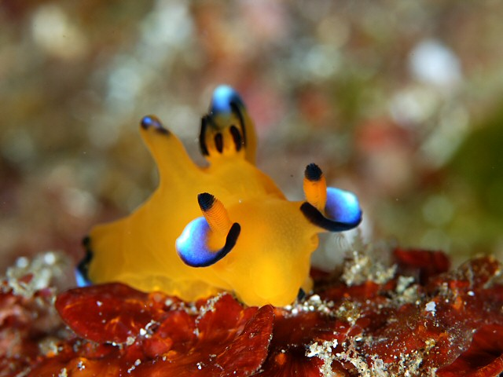
ピカチュウ……
とてもカワイイ
可愛すぎてとてもツライ……
逢いたい……
動いているよ
どこに行けば逢える？
トキワの森！！
............じゃなくて
串本の海にいるよ！！
串本ってどこ！？
ここ！！
この串本のこのあたりで逢えるよ！！
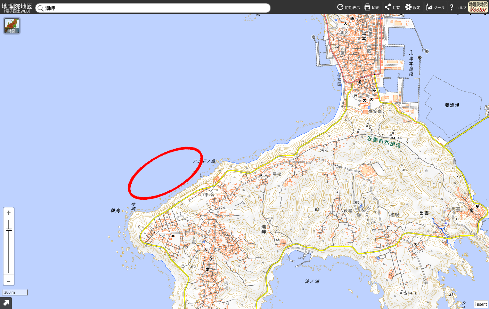
クリックまたはタップすると拡大表示されます
え！？う、海の中！？
どうすれば逢える？
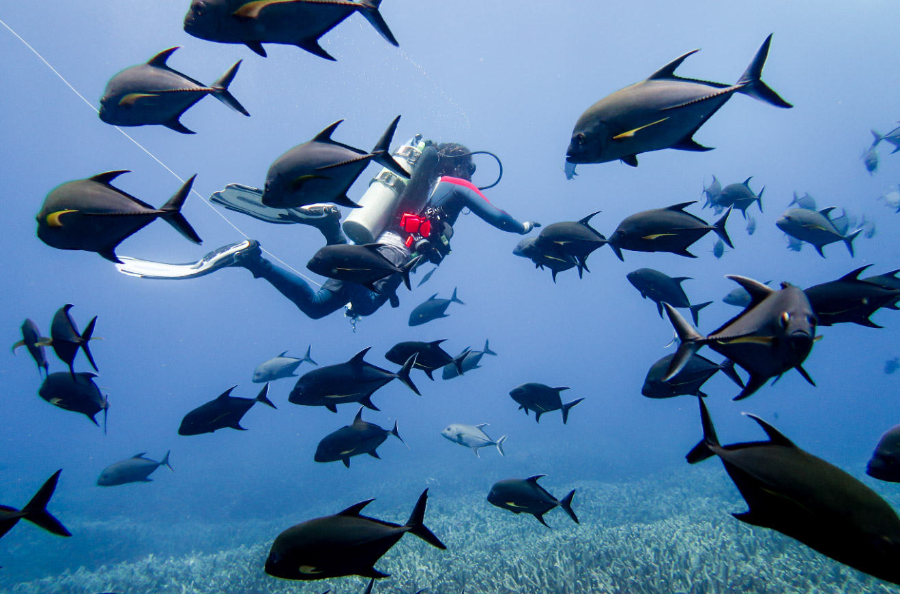
ピカチュウは海の中に住んでるんだよ
ピカチュウの飼育はむつかしいらしくて飼育している水族館はあまりないんだって
だから逢おうと思ったら海に潜らないとだめなんだ
しかもピカチュウは少し深いところにいる
だからスクーバダイビングで潜るんだ
串本では水深 10m から 18m くらいの間で見つかっているよ
ダイビング用のボートに乗って、住崎、グラスワールド、備前なんてところで潜ると逢うことができるよ
港からボートで 10 分もかからないから船酔いも安心
でもね、ピカチュウは自然のなかで生きているから、いつも逢えるとはかぎらないんだ
もしかして嵐でながされてしまっているかもしれない
もしかしてほかの生き物に食べられてしまっているかもしれない
だから、もしもピカチュウに逢うことができたら、その刻はとても大事な刻なのかもしれないね
次は逢えないかもしれないから、逢ったピカチュウをとてもたいせつにしてあげてね
住崎、グラスワールド、備前ってどこ？
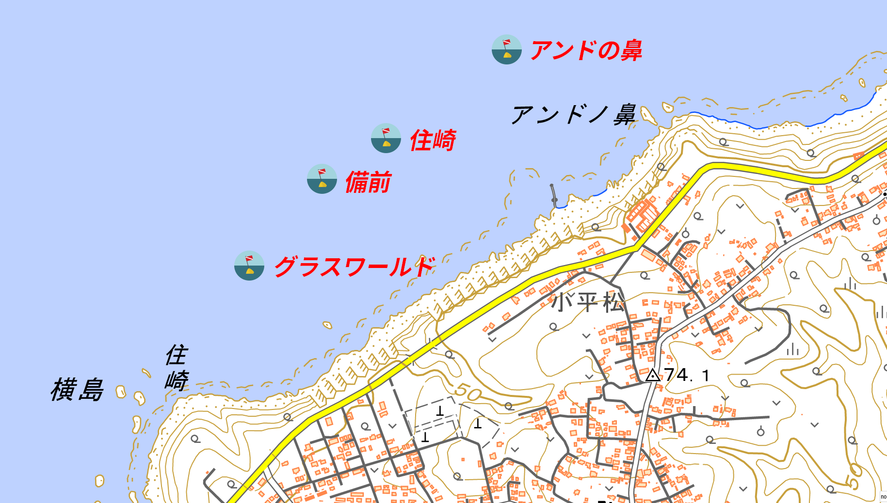
クリックまたはタップで別タブに開きます。
潮岬のすぐ西側だよ
住崎、グラスワールド、備前のことをもう少しくわしく知りたいな
どこのダイビングポイントでもマップの黄色い "根" っていう、岩とサンゴのかたまりでピカチュウを探すことになるよ。
住崎
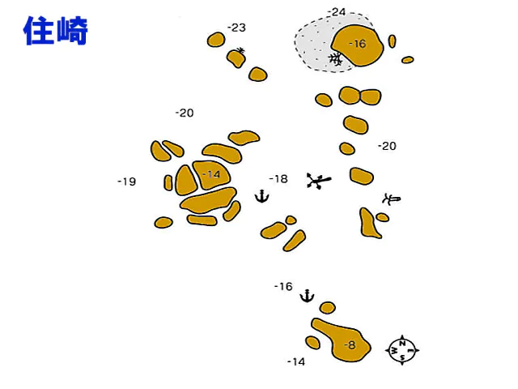
いろんな魚や生物が住んでいるとてもすてきなところ
イサキの大群なんかもいたりするよ
最近ちょっと水深が深めの -25m くらいにあるスリバチカイメンにサクラコシオリエビが見つかってアイドル状態になっていたよ
グラスワールド
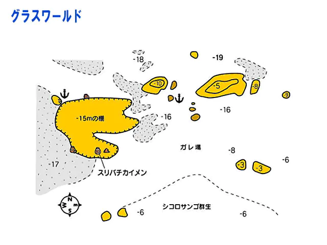
ここもいろんな魚や生物が住んでいるとてもすてきなところ
もしかするとピカチュウよりもアオウミガメで有名かも
備前
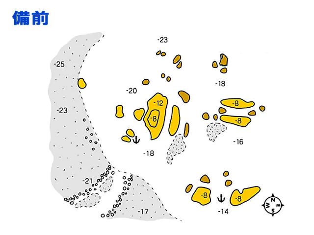
ここもいろんな魚や生物が住んでいるとてもすてきなところ
冬のウミウシ探しで多くのダイバーが入るところ
ピカチュウもウミウシだよ！！
砂地にはハゼの仲間がいっぱい！！
レッツ備前！！
逢うために必要なこと
ピカチュウは水深 -10m〜-18m くらいの海のなかでくらしているよ
だからまずはスクーバダイビングができるようになろう
オープンウォーターってコースでダイバーになるための練習をするよ
オープンウォーターってコースに合格すると君は晴れてダイバーとしてデビュー！！
さっそくピカチュウに逢いに！！
でもちょっと待って！！
ピカチュウがいるところに行くにはボートに乗っていかないといけないんだ
ボートで潜る場所まで移動するダイビングのことをボートダイビングっていうんだ
ボートダイビングをするには、やっぱり安全にボートダイビングをするための勉強と練習をしないといけない
ボートダイビングを覚える方法には 3 つの方法があるよ
一つはボートダイビングスペシャルティっていう専門のコースで学ぶこと
もう一つはアドバンスというコースのなかで、いろんなことを学ぶうちの一つとしてボートダイビングを学ぶこと
最後は楽しみのためのファンダイブというダイビングの中で、海につれていってくれる指導員 (インストラクターって言うよ) に学ぶためのコースでなくファンダイブの中でボートダイビングを教わる方法
最近はダイビング中の事故を防ぐために、３つ目の方法は避けられるようになっているよ
やっぱり水の中は人は生きられないから、みんな用心深くなってるんだね
ぼくのおすすめは２つ目のアドバンスコースでボートダイビングを覚えることだよ
ほかにもいろいろ学べてコスパ抜群！！
スキルリスト (ダイビング経験者向け)
以下のことは自分自身できるようになっておきましょう。オープンウォーターで学んだことをリストしているだけですが、まだ身についていないのであれば、インストラクターの指導を受けましょう。ファンダイブを楽しみながら一緒に指導も受けることが可能です。
- オープンウォーターの全スキル
- 適性ウェイトの把握
- 中性浮力
- 正しいフィンワーク
- 常に安定した呼吸
- セルフレスキュー
- エアの残圧の確認 (バディのチェックも含む)
- NDL の管理 (バディのチェックも含む)
- 自分の心理状態の把握
- ジャイアントストライドエントリー、バックロールエントリー、フロントロールエントリー、その他のエントリー方法から選んだ適切なエントリー
- ライン潜降・浮上
- フリー潜降・浮上
- 流れへの適切な対処
- 緊急スイミングアセント
- オクトパスブリージング
- バディ・チェック
- バディの呼吸に乱れがないかのチェック
- バディの視線がおかしくないかのチェック
- バディの挙動がおかしくないかのチェック
- アクシデント時にバディと共に対処する (インストラクターやガイドより優先)
- 砂を巻き上げない海底からの離脱方法 (これができるようになると中級一歩手前)
- 潜水計画の立案と実施、振り返り
写真著作者情報
License: CC BY 2.0
©Etienne Gosse
License: CC BY 2.0
©Etienne Gosse
License: CC BY-SA 2.0
© Xanth Huang
License: CC BY-SA 2.0
© Xanth Huang
License: CC BY-SA 2.0
©Olakhalaf
License: CC BY 2.0
©Izuzuki Diver
License: CC BY 2.0
©Izuzuki Diver
Public Domain
National Oceanic and Atmospheric Administration
License: CC BY-SA 2.0
©SHANGCHIEH
License: CC0
FIRSTonline
Public Domain
Mitsugu Oyama (a.k.a. OrzBruford, miyamafukashi)
License: CC0
uccisea1970
License: CC BY-SA 2.0
©SHANGCHIEH
License: CC0
gshoptw